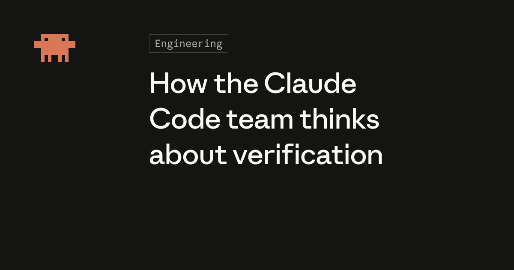
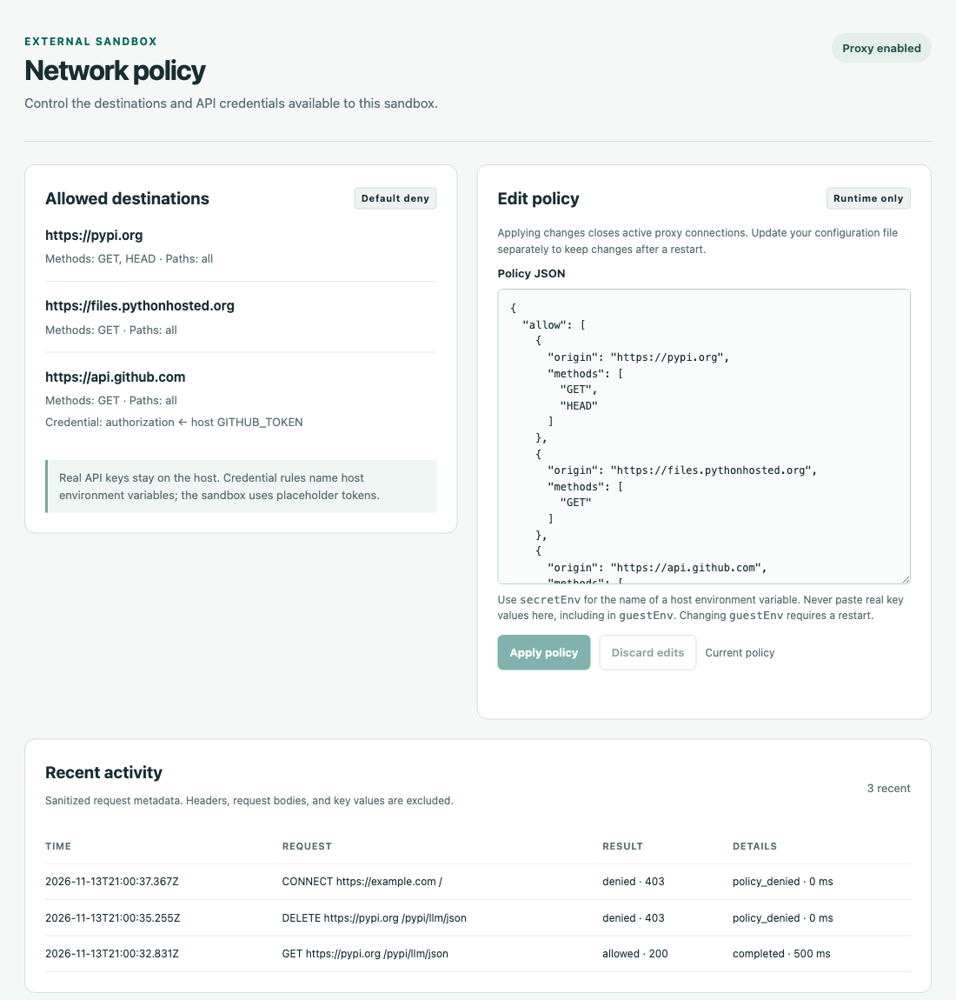
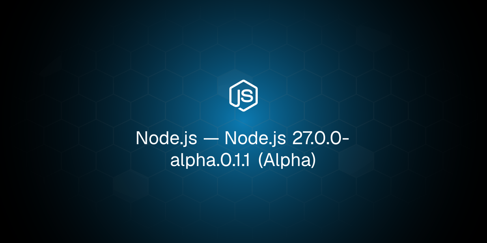
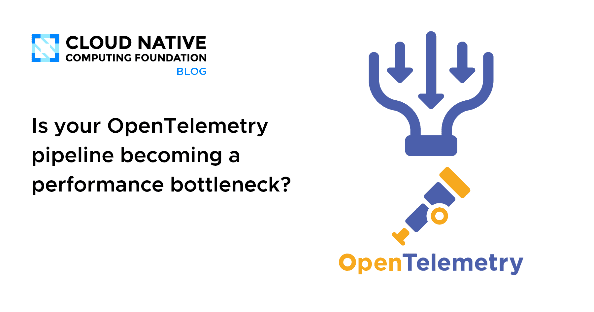
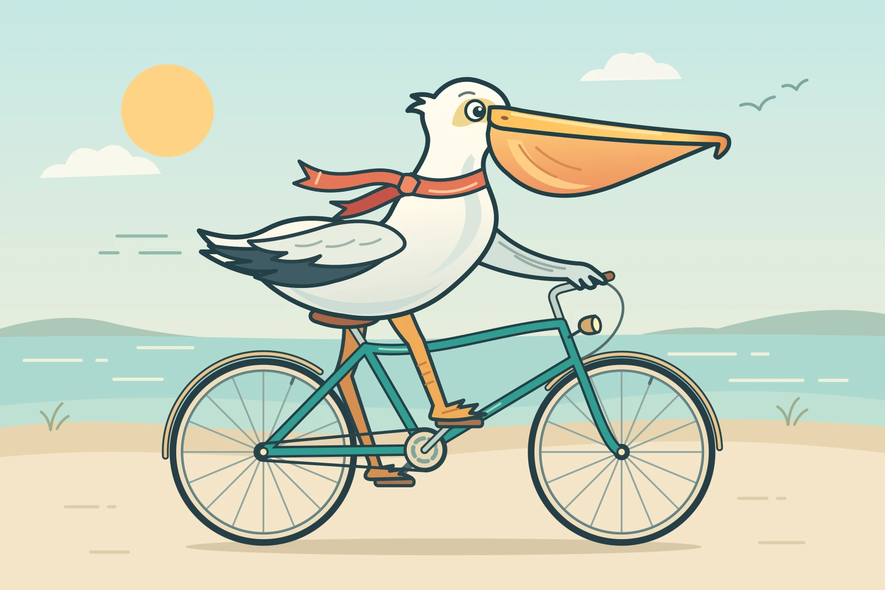
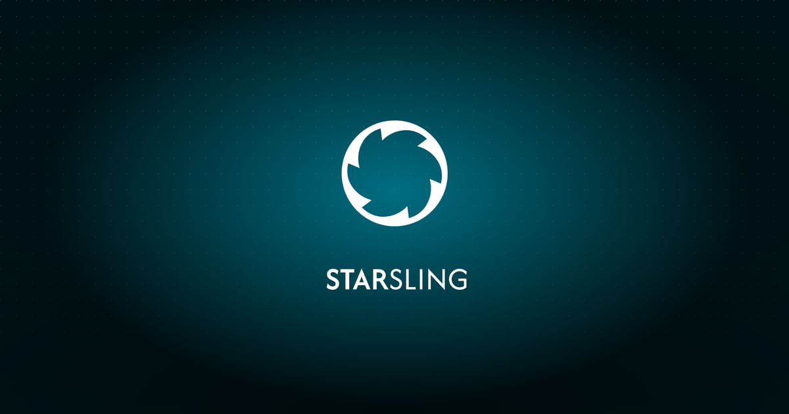
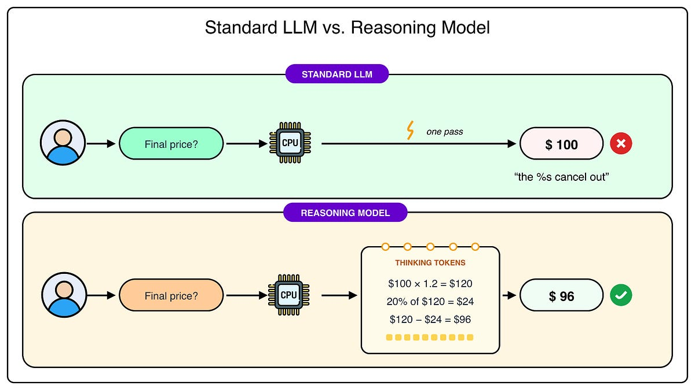
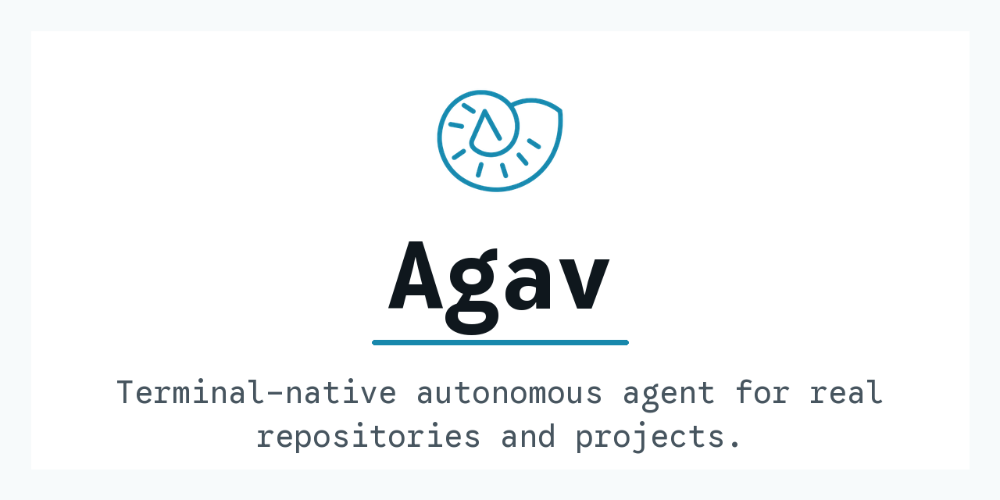
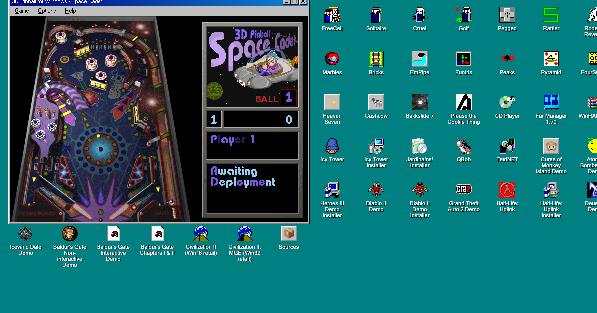

🔥 Top 3 (must read)
How the Claude Code team thinks about verification
The Claude Code team explains how they check that agent-written work is really correct. It is the most discussed item today (269 points, 214 comments on HN). Why it matters: You use Claude Code and care about test strategy. This is how the tool's own team checks agent output.

Harvard researchers find AI coding agents shifted the bottleneck to code review
Harvard researchers report that coding agents moved the slow step of delivery from writing code to reviewing it. The HN thread has 104 comments on the finding. Why it matters: As an EM, this is about your review process and team capacity when agents write more of the code.

External sandboxes for coding agents
Simon Willison worked with Prime Radiant on new ways to sandbox code that agents run. The goal is that a mistake or a prompt injection attack cannot damage your machine, mainly when trying local models. Why it matters: Safe agent runs are a real need for any team that lets agents execute commands.

🛠 Tools & releases
Node.js 27.0.0-alpha.0.1.1 (Alpha)
an early alpha of Node.js 27. The feed gave no details, so read the release notes before trying it.

Is your OpenTelemetry pipeline becoming a performance bottleneck?
a CNCF write-up of a talk on the hidden performance cost of collecting telemetry.

🤖 AI for developers
GPT‑6.2 Astra and GPT‑6.2 Sol
two new OpenAI models, in the API as
gpt-6.2-astra (hardest projects) and gpt-6.2-sol (everyday work). Simon Willison shipped LLM 0.38 alongside the post.
Launch HN: StarSling – Self-improving CI for agent-volume repos
a CI product for repos where agents open many changes (HN discussion).

Why Thinking More Can Make an LLM Dumb
ByteByteGo on why longer reasoning can give worse answers.

👔 Engineering & teams
Harvard researchers find AI coding agents shifted the bottleneck to code review
see Top 3. Good input for a team talk on review load.
Quoting Go Proverbs
"A little copying is better than a little dependency." A short rule to remember when adding npm packages.
S
🎯 For me
How the Claude Code team thinks about verification
Automation testing + Claude Code: is the best match today.
StarSling
CI pipelines: targets CI for repos with a high volume of agent changes.
Node.js 27 alpha
Node.js: the is out for early testing.
Harvard code review study
EM angle: the .
Nothing today on React, Flutter, Playwright, or Maestro.
💡 App ideas & indie builds
Alloy CSS
dialogs, menus, and tabs that work with JavaScript off. It solves the problem of basic UI parts breaking or loading slowly when they depend on JS. A good reminder that a small, focused library can get strong interest (181 points, HN).
A
Agav
an open-source terminal agent designed to waste fewer tokens. The user problem is the cost of running coding agents. It shows that "the same tool, but cheaper to run" can be a product idea (HN).

Win98 PE Interpreter in WebAssembly
runs old Windows 98 programs, such as StarCraft and Diablo, in the browser on phones. It solves access to old software with no install. It shows how far WebAssembly can go for a web app (HN).

🎓 Try this
Read External sandboxes for coding agents and try running one agent task inside a sandbox, so a bad command cannot touch your real machine.